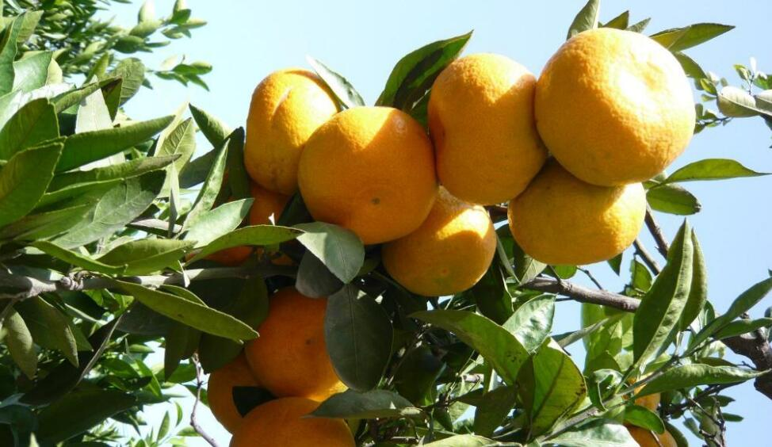

柑橘
柑橘(Citrus reticulataBlanco)是芸香科、柑橘属植物。性喜温暖湿润气候，耐寒性较柚、酸橙、甜橙稍强。芸香科柑橘亚科分布在北纬16°~37°之间。是热带、亚热带常绿果树(除枳以外)，用作经济栽培的有3个属：枳属、柑橘属和金柑属。中国和世界其他国家栽培的柑橘主要是柑橘属。
花单生或2-3朵簇生;花萼不规则5-3浅裂;花瓣通常长1.5厘米以内;雄蕊20-25枚，花柱细长，柱头头状。花期4-5月，果期10-12月。

柑橘的组成由：根、茎、叶、花和果实组成。小乔木。单生复叶，翼叶通常狭窄，或仅有痕迹，叶片披针形，椭圆形或阔卵形，大小变异较大，顶端常有凹口，中脉由基部至凹口附近成叉状分枝，叶缘至少上半段通常有钝或圆裂齿，很少全缘。花单生或2-3朵簇生;花萼不规则5-3浅裂;花瓣通常长1.5厘米以内;雄蕊20-25枚，花柱细长，柱头头状。叶柑橘的叶片为常绿性的单生复叶，由叶身、叶翼组成。叶翼着生在叶柄上。柑橘种类品种不同，叶的大小不等，形状各异。[4]根由主根、侧根、须根及须根端着生极短的根毛构成的群体，统称为根系。压条或繁殖的植株，无主根。树干与根交界处，叫根颈。[4]枝干柑橘枝干由主干、主枝、侧枝组成。
果形种，通常扁圆形至近圆球形，果皮甚薄而光滑，或厚而粗糙，淡黄色，朱红色或深红色，甚易或稍易剥离，橘络甚多或较少，呈网状，易分离，通常柔嫩，中心柱大而常空，稀充实，瓢囊7-14瓣，稀较多，囊壁薄或略厚，柔嫩或颇韧，汁胞通常纺锤形，短而膨大，稀细长，果肉酸或甜，或有苦味，或另有特异气味;种子或多或少数，稀无籽，通常卵形，顶部狭尖，基部浑圆，子叶深绿、淡绿或间有近于乳白色，合点紫色，多胚，少有单胚。花期4-5月，果期10-12月。
本站文章均来自互联网，仅供学习参考，如有侵犯您的版权，请邮箱联系我们删除！
 上一篇
上一篇